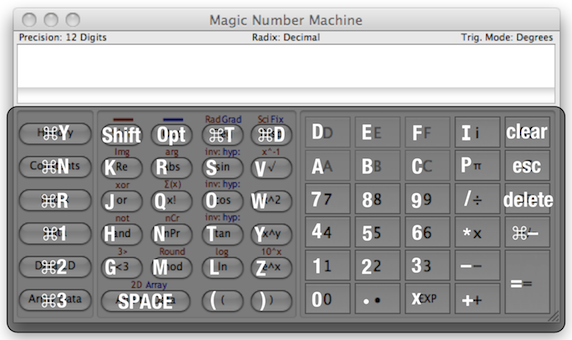

|
Magic Number
Machine Buttons
The following image shows all the keyboard shortcuts for the buttons in
the user interface: shortcuts:
same as the digit
These buttons cause digits to be entered at the current input point. Depending on the radix (base of the number system) currently selected, any of the digits from 2 to F may be disabled -- if they are available, they will become active. Operators: +, -, ×, ÷ shortcuts:
+, -, *, / respectively
These buttons insert their mathematical operators into the expression at the current input point. The buttons group numbers according to order of operations as though the entire expression had been written on one line. ie 2 + 5 / 6 * 7 gives 2 + (5 / (6 * 7)) Modifiers: (+/-), ·, EXP shortcuts:
Command-'-', ., x respectively (that's Command-minus, period, letter 'x')
These buttons adjust the current value by changing the sign, appending a fractional point (its only a decimal point if you're in decimal) or appending a "scientific notation"-style exponent. Clearing and deleting: AC, C, DEL shortcuts:
command-delete, escape and delete respectively
AC clears the entire current expression. C sets the number at the current insertion point to zero. DEL deletes a single digit from the current number or the operator at the insertion point if there is no number. Constant Numbers: i, pi shortcuts:
i, p respectively
These buttons insert their mathematical value at the current insertion point. If a number is already current, they insert an implied multiply first. This allows you to type 2p and get (2 multiplied by pi). Brackets: (, ) shortcuts:
(, ) respectively
These buttons insert brackets at the current insertion point. If the left bracket is pressed and a number is current, an implied multiplication is inserted. This allows you to type "2(3+5)" and get (2 multiplied by (3 + 5)). The right bracket has no effect if the left bracket has not been pressed. Exponents: e^, x^y, x^2, square root shortcuts:
z, y, w, v, respectively
e^ causes the next number to be used as an exponent to which the number 'e' (base of the natural logarithm 2.718...) will be raised. If the shift key is pressed first, this button causes the number 10 to be raised instead of e. x^y causes the current number to be raised to the exponent given by the next number. x^2 causes the current number to be squared (raised to the power two). Square root causes the current number to be raised to the power ½. Logarithms: ln shortcuts:
1 [lowercase L]
The next number will have its
natural logarithm taken. If the shift key is pressed, then the next
number will have its base-10 logarithm taken instead.
Trigonometric functions: sin, cos, tan shortcuts:
s, o, t
These buttons cause their
respective trigonometric functions to be applied to the next numbers
entered. If the shift key is pressed, the inverse functions are
applied. If the option key is pressed, the hyperbolic functions are
applied. If both the shift and the option keys are pressed, the inverse
hyperbolic functions are applied.
Modulo, Rounding: % shortcuts:
m
The % button inserts a modulo operator after the current number. This is not a "Percentage" button. Modulo causes the number before it to be divided by the number after it and the result is the remainder of this operation. This function also works on fractional number. If the shift key is pressed, this button simply causes the current number to be rounded towards zero (truncates the fractional part). Permutations and Combinations: nPr shortcuts:
n
Calculates how many permutations of the preceeding number can be taken from the proceeding number. If shift is pressed, calculates how many combinations of the previous number can be taken from the proceeding number. The difference is that a permutation considers the same numbers in a different order to be different, whereas a combination considers only the presence (order does not matter). Series: x! shortcuts:
q
Calculates the factorial of the current number (all the numbers from 1 up to the number multiplied together). This is only valid for whole numbers greater or equal to zero. If shift is pressed, a sum of all the numbers up to the current number is performed instead. Exponent shifting: <E shortcuts:
g
Shifts the result three digits to the left and subtracts 3 from the "scientific notation" exponent. If shift is pressed, shifts the result right and adds 3 instead. If the result is not showing, this button will generate the result of the expression. Logic Operations: and, or shortcuts:
h, j
Performs the binary operations "and" and "or" between the preceeding and proceeding numbers. The operation is always performed in binary, even if the current radix is not binary. If you don't know what that means, then maybe these buttons are not for you. If shift is pressed, then binary "not" and binary "xor" respectively are applied to the proceeding numbers. Complex number functions: Re, abs shortcuts:
k, r
Re gives the real component of the proceeding number. If shift is pressed, the imaginary component is returned instead. abs gives the magnitude of the proceeding complex number (the magnitude is the square root of the real part squared plus the imaginary part squared). If the shift key is pressed, the argument (angle about the origin between the vector of the number plotted on a real versus imaginary cartesian graph and the real positive axis) is returned instead. Wow, that's a clumsy sentence. Shift buttons: Shft, Opt shortcuts:
shift, option
The shift button toggles "Shift" mode. The shift key on the keyboard enables "Shift" mode while it is pressed. While "Shift" mode is enabled red functions are used where available instead of the buttons they are over. Pressing another button will disable "Shift" mode if it was toggled by pressing the button (if it is enabled by holding down the keyboard shift key then it will remain active until the shift key is released). The option key and button are the same except they enable access to the blue functions. Both keys can be used at once for the trigonometric functions. Other bits and pieces: Deg, Disp shortcuts:
Command-T, Command-D
Deg cycles the trigonometric mode through degree, radians and gradians. The Disp button allows you to chose a different display precision (number of digits shown). If the shift key is pressed, the precision chosen is for scientific notation (a specified number of digits of precision). If the option key is pressed, the precision chosen is for fixed notation (a specified number of decimal places). Data: Add to Data shortcuts:
space key
Append the result of the current expression to the data in the Data drawer. If the back button on your browser is too far away, you can click here to go back to the Help Contents. |